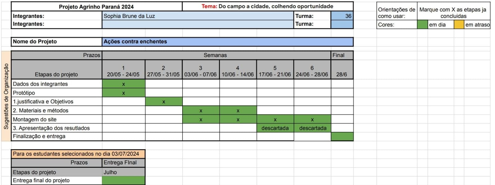
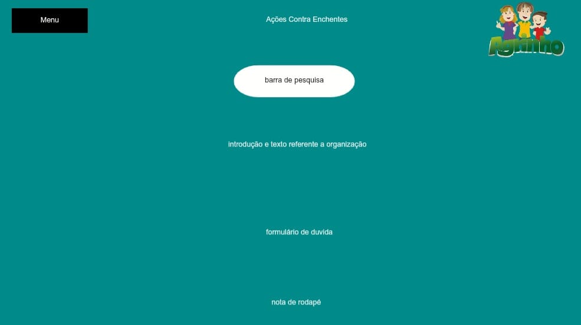
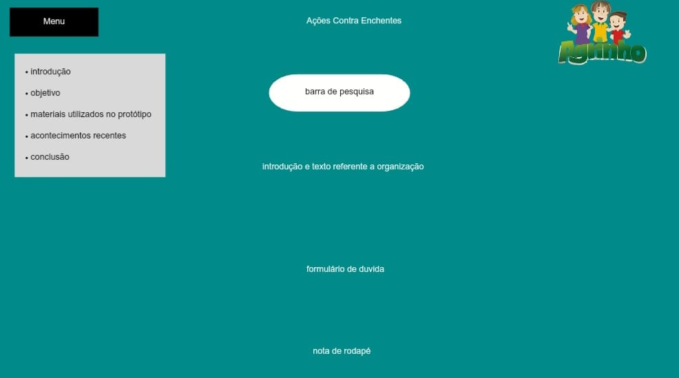

O projeto Agrinho está sendo desenvolvido nas disciplinas de Programação e de Robótica do Colégio Estadual do Paraná. Este site foi desenvolvido específicamente para o Agrinho com a ajuda e supervisão da professora Giovana de Campos Leminska, ela nos suriu que seguissemos uma tabela para melhor organização e melhor desempenho. E também sugeriu que fizessemos protótipos antes decomecar a desenvolver o site.
Esses são os protótipos feitos no canva para uma melhor ideia de como fazer o site, a primeira versão com o menu escondido e o segundo com o menu ativo.
 